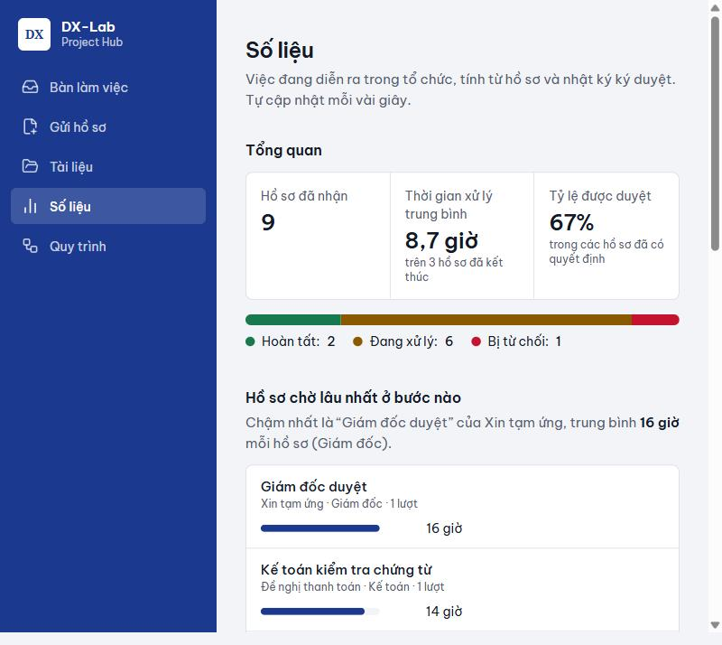

Đổi quy trình có kiểm soát

Khác biệt bằng lời thường, kết quả chạy thử: bao nhiêu hồ sơ sẽ đổi đường đi.
Nền tảng lõi không giao diện trên công nghệ nguồn mở, và một ứng dụng chạy trên nó: nói ra quy trình, có ngay ứng dụng.
github.com/ngophatneknha/OLP-MNM · Apache-2.0
| Tầng | Trong sản phẩm |
|---|---|
| Tầng 3 Kinh doanh số | Để ngỏ: ứng dụng ngành cắm vào Tầng 2 (kho quy trình mẫu library/) |
| Tầng 2 Năng lực số H-P-D-I | Ứng dụng web: soạn và vận hành quy trình, bảng việc, số liệu, hỏi đáp, trợ lý AI |
| Tầng 1 Nền tảng lõi, headless | Đăng nhập một lần, cổng API, dữ liệu, tệp, luồng công việc, kho lạnh, cảm biến, đa tổ chức |
Giao diện chỉ gọi lõi qua cổng API; lõi không có giao diện.
| Yêu cầu của Đề | Thành phần | Giấy phép |
|---|---|---|
| Định danh, SSO, MFA | Keycloak | Apache-2.0 |
| Cổng API, zero-trust | Apache APISIX (+ Coraza WAF tùy chọn) | Apache-2.0 |
| Dữ liệu có cấu trúc | PostgreSQL + Hasura (API tự sinh, quyền theo dòng) | PostgreSQL / Apache-2.0 |
| Dữ liệu phi cấu trúc | SeaweedFS (S3) + ClamAV kiểm dịch | Apache-2.0 / GPL-2.0 (container riêng) |
| Luồng công việc | Flowable (BPMN) | Apache-2.0 |
| Két bí mật | OpenBao (tùy chọn) | MPL-2.0 |
Không thành phần AGPL; thành phần bên thứ ba chạy là container riêng, không sửa mã.
| Nguyên lý | Đã làm |
|---|---|
| (i) Phân tách theo vòng đời dữ liệu | Hồ sơ đã kết thúc xuống kho lạnh JSONL, sổ cái băm nối chuỗi không sửa xóa được |
| (ii) Hội tụ IT và OT | Cảm biến gửi số đo bằng token thiết bị; vượt ngưỡng tự mở hồ sơ sửa chữa trong quy trình duyệt |
| (iii) Phả hệ và nguồn gốc dữ liệu | Phả hệ báo cáo đọc từ bảng nào, lấy tự động từ danh mục PostgreSQL |
| (iv) Zero-Trust, kiểm dịch, tự phục hồi | Token kiểm tại biên, ClamAV, WAF; tự khởi động lại và khôi phục từ sao lưu có kiểm thử |
“Nhân viên xin tạm ứng, trưởng phòng duyệt, trên 5 triệu phải thêm giám đốc, kế toán chi tiền.”
| Trong dự án nguồn mở | Trong DX-Lab Project Hub |
|---|---|
| Commit, bản phát hành | Mỗi lần phát hành quy trình là một phiên bản bất biến |
| Pull request + CI | Đề xuất thay đổi, tự chạy thử trên hồ sơ cũ |
| Review bắt buộc | Người duyệt phải khác người đề xuất |
| Issue, Fork | Ai cũng góp ý; lấy từ kho quy trình mẫu, đóng góp lại |
node scripts/demo-platform.mjs
Khác biệt bằng lời thường, kết quả chạy thử: bao nhiêu hồ sơ sẽ đổi đường đi.

Ai đã ký có dấu đỏ kèm tên và giờ, ô đang chờ sáng lên. Từ chối bắt buộc có lý do. Nhật ký bất biến ở tầng cơ sở dữ liệu.

Mọi con số tính từ nhật ký ký duyệt, dòng nào cũng bấm vào được hồ sơ gốc. Điểm trưởng thành H-P-D-I có công thức công bố.
Cảm ơn ban giám khảo. Xin mời đặt câu hỏi.